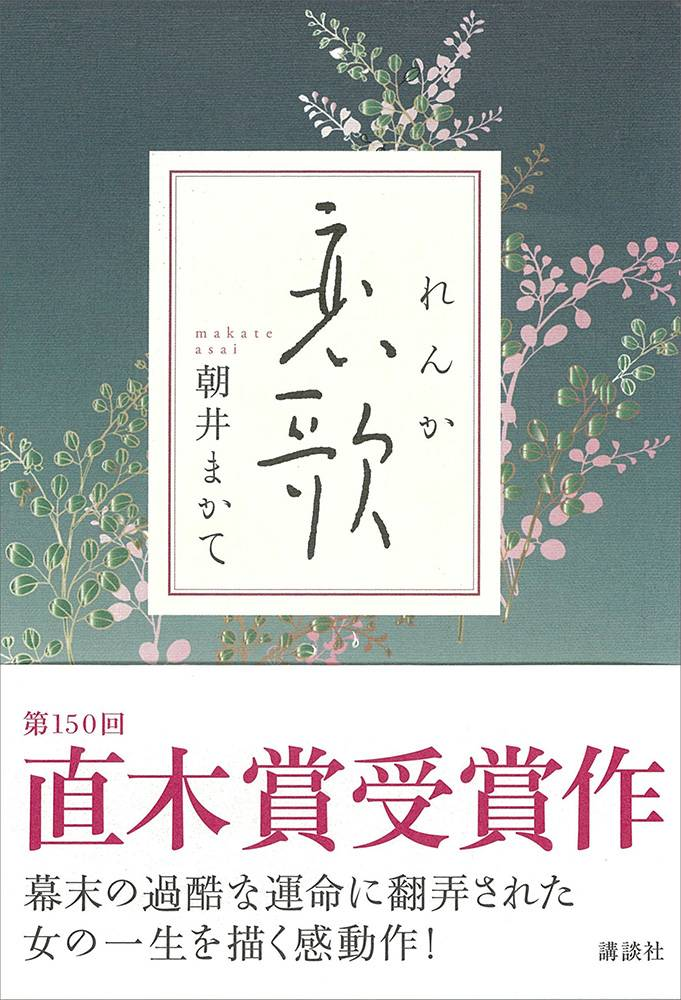
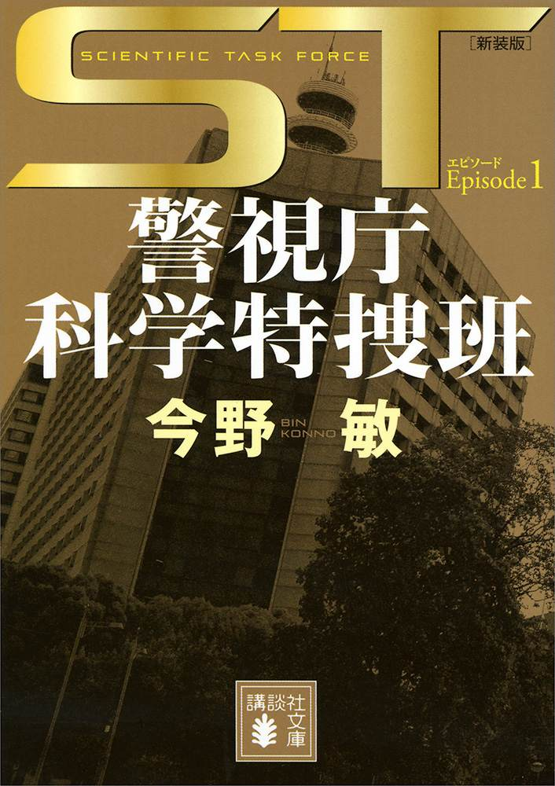
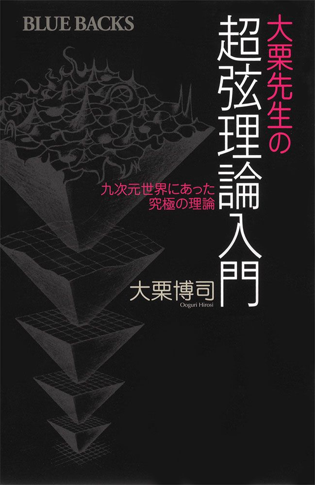
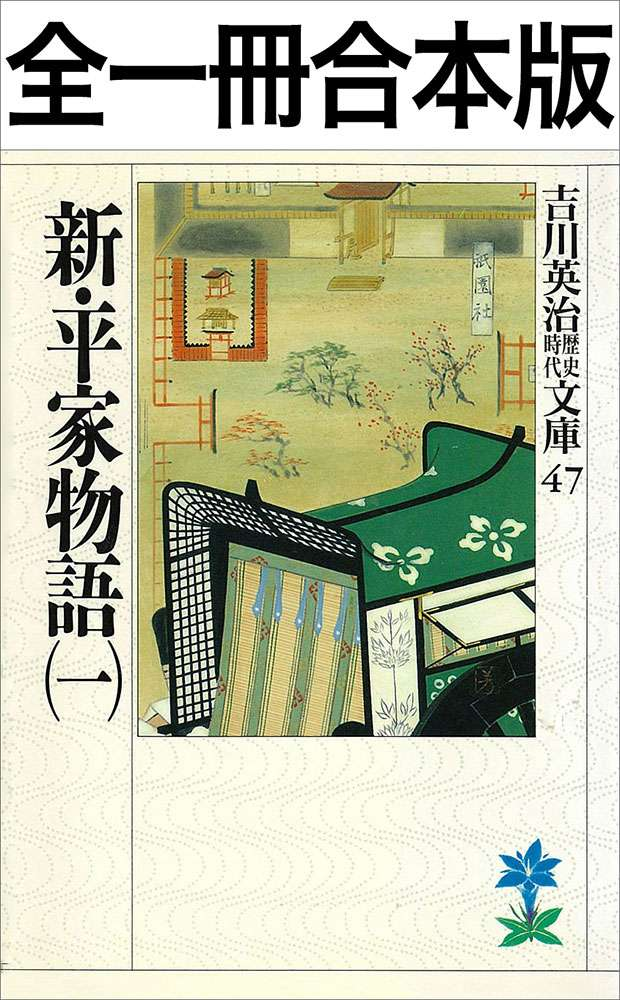
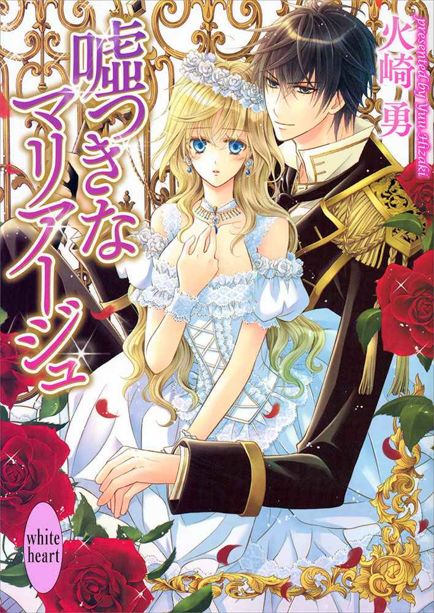
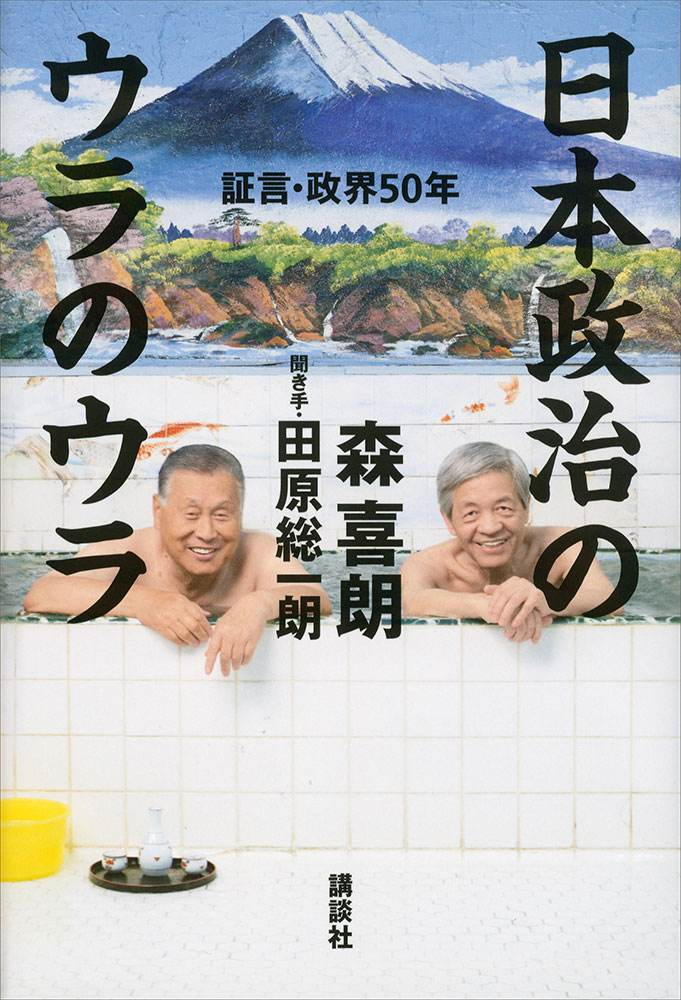

| ２０１４講談社電子書籍Ｂｅｓｔ１００ | |
| Unknown | |
| (2014) | |
はじめに
まるで自分の「書庫」を持ち歩いているように、いつでも、どこでも読書ができる。
便利で手軽な電子書籍は、この1年でぐっと読者を増やし、新しい読書の形として定着しつつあります。
2014年11月現在、講談社では約7000点の作品を電子書籍として配信しています。
その中から、この度、2013年9月～2014年8月の売上の集計に基づいて人気の100作品を選び、ランキング形式でご紹介する、この『2014講談社電子書籍ベスト100』を作りました。
フィクション／ノンフィクションを問わず幅広いジャンルの、いずれも魅力的な作品が揃っています。ぜひ、新たな愛読書との出会いを見つけていただければ幸いです。
2014年11月 講談社
1
ルーズヴェルト・ゲーム
池井戸潤
配信開始日 2014/3/14
【内容紹介】
大手ライバル企業に攻勢をかけられ、業績不振にあえぐ青島製作所。リストラが始まり、歴史ある野球部の存続を疑問視する声が上がる。かつての名門チームも、今やエース不在で崩壊寸前。廃部にすればコストは浮くが──社長が、選手が、監督が、技術者が、それぞれの人生とプライドをかけて挑む「奇跡の大逆転 」とは。2014年テレビドラマ化。
2
空飛ぶタイヤ（上）（下）
池井戸潤
配信開始日 2014/3/14
【内容紹介】
走行中の大型トレーラーが脱輪し、はずれたタイヤが歩道を歩く若い母親と子を直撃した。トレーラーの製造元ホープ自動車は、トレーラーを所有する赤松運送の整備不良が原因と主張するが、社長の赤松は到底納得できない。独自に真相に迫ろうとする赤松を阻む、大企業の論理に。会社の経営は混迷を極め、家族からも孤立し、絶望のどん底に堕ちた赤松に、週刊誌記者・榎本が驚愕の事実をもたらす。
3
新装版 不祥事
池井戸潤
配信開始日 2014/3/14
【内容紹介】
2014年４月スタート日本テレビ系ドラマ「花咲舞が黙ってない」原作本！主演：杏「ベテラン女子行員はコストだよ」そう、うそぶく石頭の幹部をメッタ斬るのは、若手ホープの"狂咲"こと花咲舞。トラブルを抱えた支店をまわり（＝臨店）、業務改善を指導する舞は、事務と人間観察の名手。歯に衣着せぬ言動で、歪んだモラルと因習に支配されたメガバンクを蹴り上げる！
4
新装版 銀行総務特命
池井戸潤

配信開始日 2014/3/14
【内容紹介】
2014年４月スタート日本テレビ系ドラマ「花咲舞が黙ってない」原作本（講談社文庫） 主演：杏。帝都銀行で唯一、行内の不祥事処理を任された指 宿 修 平 ）。顧客名簿流出、現役行員のAV出演疑惑、幹部の裏金づくり......スキャンダルに事欠かない伏魔殿 を指宿は奔走する。腐敗した組織が、ある「罠」を用意しているとも知らずに──「総務特命担当者」の運命はいかに？ 意外な仕掛けに唸らされること間違いなし！
5
鉄の骨
池井戸潤
配信開始日 2014/3/14
【内容紹介】
中堅ゼネコン一松組の若手、富島平太が異動した先は、「談合課」と揶揄される、大口公共事業の受注部署だった。今度の地下鉄工事を取らないと、ウチが傾くぞ──たしかな技術力を武器に、真正面から入札に挑もうとする一松組の前に、「談合」の壁が立ちはだかる。組織に殉じるか、正義を信じるか。吉川英治新人賞に輝いた白熱の人間ドラマ！
6
三国志全一冊合本版
吉川英治
配信開始日 2013/6/28
【内容紹介】
不朽の名作、吉川三国志を一気に読める完全版。日本では卑弥呼が邪馬台国を統治する頃、中国は後漢も霊帝の代、政治の腐爛は黄巾賊を各地にはびこらせ、民衆は喘ぎ苦しむ。このとき、楼桑村の一青年劉備は、同志関羽、張飛と桃園に義盟を結び、害賊を討ち、世を救わんことを誓う──以来百年の治乱興亡に展開する壮大な世紀のドラマ。その華麗な調べと哀婉の情は、吉川文学随一と定評のあるところである。
7
スティーブ・ジョブズ Ⅰ ・Ⅱ
著者 ウォルター・アイザックソン／訳者 井口耕二
配信開始日 2011/10/24
【内容紹介】
アップル創設の経緯から、iPhone、iPad誕生秘話、そして引退まで、スティーブ・ジョブズ自身がすべてを明らかに。本人が取材に全面協力したからこそ書けた、唯一無二の記録。伝説のプレゼンテーションから、経営の極意まで。経営者としてのジョブズの思考がたっぷり詰まった内容。ビジネス書、経営書としても他の類似書を圧倒。
8
新世界より（上）（中）（下）
貴志祐介
配信開始日 2012/9/28
【内容紹介】
1000年後の日本。豊かな自然に抱かれた集落、神 栖 66町には純粋無垢な子どもたちの歓声が響く。周囲を注 連 縄 で囲まれたこの町には、外から穢れが侵入することはない。「神の力 」を得るに至った人類が手にした平和。念動力 の技を磨く子どもたちは野心と希望に燃えていた......隠された先史文明の一端を知るまでは。
9
人類資金I～Ⅵ
福井晴敏
配信開始日 2013/8/9
【内容紹介】
終戦時、日銀の地下倉庫から莫大な金塊が姿を消した。戦後の混乱と日本の復興を糧に膨れ上がったその資産の名は『M資金』。七〇年ののち、詐欺を生業とする真舟雄一の前に"M"と名乗る男が現れ、とてつもない計画を持ちかける。「『M資金』を盗み出してもらいたい。報酬は50億」待望の書下ろし超大作！
10
十角館の殺人〈新装改訂版〉
綾辻行人
配信開始日 2012/12/14
【内容紹介】
十角形の奇妙な館が建つ孤島・角島を大学ミステリ研の７人が訪れた。館を建てた建築家・中村青司は、半年前に炎上した青屋敷で焼死したという。やがて学生たちを襲う連続殺人。ミステリ史上最大級の、驚愕の結末が読者を待ち受ける！ 1987年の刊行以来、多くの読者に衝撃を与え続けた名作が新装改訂版で登場。
11
アウトブレイク・カンパニー 萌える侵略者（1）～（10）
著者 榊一郎／イラスト ゆーげん
配信開始日 2012/1/20
【内容紹介】
富士の樹海はファンタジーな異世界に続いてた!? そんな非常識な状況に放り込まれたのは高校ドロップアウトの加納慎一。ラノベ作家とエロゲー原画師を両親に持つサラブレッド級おたくの慎一だが、特別な力は無い。持つのは『萌え』の知識、見識だけ。その慎一に課せられた任務は『萌え』の伝道！ というわけで何がなんだか分からないまま、ハーフエルフのメイドさんや美幼女皇帝と親交を深めていくと、今度はテロが!?
12
恋歌
朝井まかて

配信開始日 2013/9/27
【内容紹介】
【第150回直木賞受賞作】葉室麟氏絶賛！ 女性はこれほどまでに恋を抱いて生きるのか。樋口一葉の歌の師匠として知られ、明治の世に歌塾「萩の舎」を主宰していた中島歌子は、幕末には天狗党の林忠左衛門に嫁いで水戸にあった。尊皇攘夷の急先鋒だった天狗党がやがて暴走し、弾圧される中で、歌子は夫と引き離され、自らも投獄され、過酷な運命に翻弄されることになる。「萩の舎」主宰者として後に一世を風靡し多くの浮き名を流した歌子は何を思い胸に秘めていたのか。幕末の女の一生を巧緻な筆で甦らせる。
13
実践イラスト版 スローセックス 完全マニュアル
アダム徳永
配信開始日 2012/2/24
【内容紹介】
スローセックスは、実践すれば誰もが気持ちよくなれるセックスです。心とカラダは密接に繋がっており、快感という具体的な幸福を、脳とカラダで実感することで、人間らしい豊かで温かい感情が、自然と湧き上がってくるようになるのです。セックスで愛を伝えるためには、正しい知識と技術が必要です。セックスが先か愛が先かも大切ですが、セックスでなければ伝えられない愛情があることを、この一冊でお伝えします。
14
超高速！参勤交代
土橋章宏
配信開始日 2013/11/8
【内容紹介】
ときは享保20年（1735）初夏、改革の嵐吹き荒ぶ８代将軍吉宗の時代。わずか１万5000石の磐城湯長谷藩に隠し金山の嫌疑がかかり、幕府老中から「５日以内に参勤せねば、藩を取り潰す」と難題をふっかけられた。若殿様以下７名は東国一の忍びの力を借りつつ、陸前浜街道、水戸街道、さらには山野を踏み越え江戸城本丸へ急ぐ。軽量化のため竹光しか持たない一行を阻む公儀御庭番と百人番所の精鋭。湯長谷藩の運命や如何!? 2014年映画公開。
15
進撃の巨人 Before the fall（1）～（3）
原作 諫山創／著者 涼風涼／イラスト THORES柴本
配信開始日 2012/1/20
【内容紹介】
ただ『巨人』に捕食される人類は、壁の内で生存するだけだった。工房で働く主人公・アンヘルは、壁の外を調査する調査兵団を『巨人』から守る兵器を開発していたが、誰も『巨人』の弱点を知らず未だ彼らを倒した者はいない。数々の屍を乗り越えてアンヘルは巨人に対抗しうる唯一の《装置》の開発に着手する。大人気コミック『進撃の巨人』の前日譚がいよいよオリジナル小説として登場！
16
創作の極意と掟
筒井康隆
配信開始日 2014/3/28
【内容紹介】
創作歴60年の筒井康隆が満を持して執筆した、『文学部唯野教授』実践篇とも言うべき一冊。作家の書くものに必ず生じる「凄味」とは？ 「色気」の漂う作品、人物、文章とは？ 作家が恐れてはならない「揺蕩」とは？ 「小説」という形式の中で、読者の想像力を遥かに超える数々の手法と技術を試してきた著者だからこそ書ける、21世紀の"文章読本"。創作歴60年の筒井康隆が初めて明かす、目から鱗の全く新しい小説作法！
17
人を動かす、新たな３原則 売らないセールスで、誰もが成功する！
著者 ダニエル・ピンク／訳者 神田昌典
配信開始日 2013/7/26
【内容紹介】
本書のテーマはセールスだ。だが、あなたがこれまでに読んだ（あるいは無視した）どんなセールス本とも異なる。それは、自動車の販売でもミーティングでアイデアを売り込むのでも、あらゆる側面において売るという行為が、過去一〇〇年間に経験した変化よりも、この一〇年間に経験した変化のほうが大きいからである。売るということに関ししてわたしたちが抱く認識のほとんどは、崩れかけた前提のうえに築かれている。（はじめに）
18
小説L♥DK 柊聖'S ROOM
著者 里見蘭／原作 渡辺あゆ
配信開始日 2013/9/13
【内容紹介】
アパートで一人暮らしする久我山柊聖の隣に住むのが、おなじ学校の西森葵。葵の起こしたトラブルから、柊聖は葵と同居することになってしまいます。ひとつ屋根の下、ドキドキの同居生活の日々のなかで、柊聖と葵に恋が芽生えていきます。しかし、柊聖には、忘れられない人がいて...。大人気漫画LDKが小説になりました。小説の主人公は柊聖。ミステリアスな柊聖の赤裸々な感情が明らかになります。
19
殺戮にいたる病
我孫子武丸
配信開始日 2013/10/11
【内容紹介】
永遠の愛をつかみたいと男は願った──東京の繁華街で次々と猟奇的殺人を重ねるサイコ・キラーが出現した。犯人の名前は、蒲生稔！ くり返される凌辱の果ての惨殺。冒頭から身も凍るラストシーンまで恐るべき殺人者の行動と魂の軌跡をたどり、とらえようのない時代の悪夢と闇を鮮烈無比に抉る衝撃のホラー。
20
身代わりフィアンセの二重生活～昼も夜も愛されて～
著者 ゆりの菜櫻／絵 アオイ冬子
配信開始日 2013/12/20
【内容紹介】
「美貌の双子」として社交界でも名高い、姉のマリエッタと弟のミシェルは、多額の借金を抱える貧乏子爵家の子息。ある日、給金が二倍支払われるという近衛隊から声がかかり、おてんばなマリエッタは、体の弱いミシェルの代わりに、男装して入隊することに。そんな彼女に、隊長でもある名門伯爵のアレンが、結婚を申し込んできて!? 昼は軍人、夜は婚約者──マリエッタの過酷な二重生活が始まった！
21
すべてがFになる THE PERFECT INSIDER
森博嗣
配信開始日 2009/8/14
【内容紹介】
孤島のハイテク研究所で、少女時代から完全に隔離された生活を送る天才工学博士・真賀田四季。彼女の部屋からウエディング・ドレスをまとい両手両足を切断された死体が現れた。偶然、島を訪れていたN大助教授・犀川創平と女子学生・西之園萌絵が、この不可思議な密室殺人に挑む。新しい形の本格ミステリィ登場。2014年テレビドラマ化。
22
ST 警視庁科学特捜班 エピソード１＜新装版＞
今野敏

配信開始日 2014/6/13
【内容紹介】
能力抜群の５人のスペシャリストの見事な捜査、ここに始まる！ ST初登場編新装版。多様化する現代犯罪に対応するため新設された警視庁科学特捜班、略称ST。繰り返される猟奇殺人、捜査陣は典型的な淫楽殺人と断定したが、STの青山は１人これに異を唱える。プロファイリングで浮かび上がった犯人像の矛盾、追い詰められた犯罪者の取った行動とは。痛快無比エンタテインメントの真骨頂！
23
獣の奏者 Ⅰ 闘蛇編
上橋菜穂子
配信開始日 2010/11/12
【内容紹介】
児童文学のノーベル賞にあたる、国際アンデルセン賞作家賞受賞！ 世界的注目作家の新たなる代表作。リョザ神王国。闘蛇村に暮らす少女エリンの幸せな日々は、闘蛇を死なせた罪に問われた母との別れを境に一転する。母の不思議な指笛によって死地を逃れ、蜂飼いのジョウンに救われて九死に一生を得たエリンは、母と同じ獣ノ医術師を目指すが──。苦難に立ち向かう少女の物語が、いまここに幕を開ける！
24
しんがり 山一證券 最後の12人
清武英利
配信開始日 2014/1/31
【内容紹介】
【第36回講談社ノンフィクション賞受賞作】負け戦のときに、最後列で敵を迎え撃つ者たちを「しんがり」と言います。戦場に最後まで残って味方の退却を助けるのです。四大証券の一角を占める山一證券が自主廃業を発表したのは、1997年11月のことでした。店頭には「カネを、株券を返せ」と顧客が殺到し、社員たちは雪崩を打って再就職へと走り始めます。その中で、会社に踏み留まって経営破綻の原因を追究し、清算業務に就いた一群の社員がいました。
25
妖怪アパートの幽雅な日常（1）～（10）
香月日輪
配信開始日 2011/7/1
【内容紹介】
共同浴場は地下洞窟にこんこんと湧く温泉、とてつもなくうまいご飯を作ってくれる「手首だけの」賄いさん──13歳で両親を失った俺が高校進学と同時に入居したのは人呼んで"妖怪アパート"！ 次々と目の当たりにする非日常を前に、俺の今までの常識と知識は砕け散る。
26
モダンタイムス（上）（下）
伊坂幸太郎
配信開始日 2012/6/29
【内容紹介】
恐妻家のシステムエンジニア・渡辺拓海が請け負った仕事は、ある出会い系サイトの仕様変更だった。けれどもそのプログラムには不明な点が多く、発注元すら分からない。そんな中、プロジェクトメンバーの上司や同僚のもとを次々に不幸が襲う。彼らは皆、ある複数のキーワードを同時に検索していたのだった。
27
彼女がフラグをおられたら（1）～（10）
著者 竹井10日／イラスト CUTEG
配信開始日 2012/1/20
【内容紹介】
主人公・旗立颯太は、ひょんなことから他人のフラグが「目視」できるようになってしまった高校生。転校したての颯太は、右も左もわからない環境の中で近づいてくるヒロインたちの「恋愛フラグ」をついつい折りまくってしまう。その奇妙な行動に興味をもった美少女たちと、なんと颯太と同じ屋根の下で暮らすことに。女子七人との寮生活で折っても折ってもわき上がってくる恋愛フラグにいい加減うんざりした颯太だが......!?
28
妖怪アパートの幽雅な日常 ラスベガス外伝
香月日輪
配信開始日 2014/4/18
【内容紹介】
「妖怪アパートの幽雅な日常」が完結してから４年。妖アパファンから、是非読みたいリクエストが多かった稲葉夕士の世界旅行。その過酷でファンタスティックな日々が、ここに明らかになります。古本屋と一緒の世界旅行の途中で、ラスベガスに立ち寄った稲葉夕士。そこに住む、千晶先生の兄・恵のところにお世話になることになったのだが...。
29
新装版 ハゲタカ（上）（下）
真山仁
配信開始日 2013/11/29
【内容紹介】
大人気シリーズ第１作！ 不良債権を抱え瀕死状態にある企業の株や債券を買い叩き、手中に収めた企業を再生し莫大な利益をあげる、それがバルチャー（ハゲタカ）・ビジネスだ。ニューヨークの投資ファンド運営会社社長・鷲津政彦は、不景気に苦しむ日本に舞い戻り、強烈な妨害や反発を受けながらも、次々と企業買収の成果を上げていった。
30
会社を変える分析の力
河本薫
配信開始日 2013/8/23
【内容紹介】
いまやビジネスの世界では、「データ分析が競争を制す」と言われる時代。しかしその一方で、高い分析ソフトを買ったものの、宝の持ち腐れで終わっているという会社も少なくない。では、分析力を武器にできる会社は何が違うのか？ また分析力を武器にできる個人は何が違うのか？ 第一人者が丁寧にその違いを解き明かす。
31
アラビアン・ウェディング ～王子の寵愛レッスン～
著者 矢城米花／絵 Ciel
配信開始日 2013/10/18
【内容紹介】
貧しい庶民の娘・レイリィは、アーディル王子に拾われ、一流の貴婦人になる教育を受けることになった。豪華なドレスに煌びやかな後宮での暮らし。戸惑い反発するレイリィに、王子は淫らな淑女のたしなみを教えてゆく。 「おまえの体は仕込みがいがある」 夜ごとの王子の愛撫は、レイリィの体を甘く開花させていき......？ 究極の花嫁誕生ラブロマンス！
32
ビッグデータの正体 情報の産業革命が世界のすべてを変える
著者 ビクター・マイヤー＝ショーンベルガー／著者 ケネス・クキエ／訳者 斎藤栄一郎
配信開始日 2013/7/5
【内容紹介】
■なぜグーグルは複数の検索語と数式を組み合わせてインフルエンザの流行を予測できるのか■なぜアマゾンは、データによる「お勧め本」システムを採用したのか■なぜ「一人一人のお尻の形」のデータが「金の成る木」に変身するのか■なぜ電子書籍が発達すると「本」「読書」の概念が根本から変わってしまうのか？■なぜ今日の映画産業は、事前に「ヒット作」や「具体的な黒字・赤字」を予想できるのか？ 答えはすべて本書の中に。
33
島はぼくらと
辻村深月
配信開始日 2013/6/7
【内容紹介】
母と祖母の女三代で暮らす、伸びやかな少女、朱里。美人で気が強く、どこか醒めた網元の一人娘、衣花。父のロハスに巻き込まれ、東京から連れてこられた源樹。熱心な演劇部員なのに、思うように練習に出られない新。四人はフェリーで本土の高校に通う。「幻の脚本」の謎、未婚の母の涙、Ｉターン青年の後悔、島を背負う大人たちの覚悟、そして、自らの淡い恋心。故郷で知った大切なこと、すべてが詰まった書き下ろし長編。
34
ハサミ男
殊能将之
配信開始日 2013/7/12
【内容紹介】
美少女を殺害し、研ぎあげたハサミを首に突き立てる猟奇殺人犯「ハサミ男」。３番目の犠牲者を決め、綿密に調べ上げるが、自分の手口を真似て殺された彼女の死体を発見する羽目に陥る。自分以外の人間に、何故彼女を殺す必要があるのか。「ハサミ男」は調査をはじめる。精緻にして大胆な長編ミステリの傑作！ 【2005年公開映画「ハサミ男」原作】
35
チルドレン
伊坂幸太郎
配信開始日 2010/1/8
【内容紹介】
「俺たちは奇跡を起こすんだ」独自の正義感を持ち、いつも周囲を自分のペースに引き込むが、なぜか憎めない男、陣内。彼を中心にして起こる不思議な事件の数々──。何気ない日常に起こった５つの物語が、一つになったとき、予想もしない奇跡が降り注ぐ。ちょっとファニーで、心温まる連作短編の傑作。
36
キウイγ は時計仕掛け
森博嗣
配信開始日 2013/12/20
【内容紹介】
建築学会のため伊豆の大学を訪れた加部谷恵美たちは、宿泊先近くで西之園萌絵と再会した。一方、加部谷と共同発表する山吹は、国枝桃子と伊豆へ向かっていた。学会の会場となる大学には、不気味な宅配便が届いた。その中には、キウイフルーツに缶ジュースなどのプルトップが突き刺されたものが入っていた......。犀川先生も登場するGシリーズ第９弾。
37
魔王
伊坂幸太郎
配信開始日 2010/1/8
【内容紹介】
会社員の安藤は弟の潤也と二人で暮らしていた。自分が念じれば、それを相手が必ず口に出すことに偶然気がついた安藤は、その能力を携えて、一人の男に近づいていった。５年後の潤也の姿を描いた「呼吸」とともに綴られる、何気ない日常生活に流されることの危うさ。新たなる小説の可能性を追求した物語。
38
2030年 世界はこう変わる アメリカ情報機関が分析した「17年後の未来」
米国国家情報会議 編／訳者 谷町真珠
配信開始日 2013/6/28
【内容紹介】
2030年は今とはまったく違う世界になっています。1995年に国家としてのピークを過ぎた日本の国力は人口減少・高齢化とともに衰えていきます。2015年にはアメリカもピークを迎え、「唯一の超大国」の地位から脱落します。経済発展著しい中国も2025年あたりを境に経済が失速、日本と同様高齢化社会を迎えます。「新しい時代に日本はどう変わっていくべきなのか」を考えるための格好の書です。
39
知的複眼思考法 誰でも持っている創造力のスイッチ
苅谷剛彦

配信開始日 2013/9/27
【内容紹介】
常識にとらわれた単眼思考を行っていては、いつまでたっても「自分の頭で考える」ことはできない。自分自身の視点からものごとを多角的に捉えて考え抜く、それが知的複眼思考法だ。情報を正確に読みとる力。ものごとの筋道を追う力。受け取った情報をもとに自分の論理をきちんと組み立てられる力。こうした基本的な考える力を基礎にしてこそ、自分の頭で考えていくことができる。ベストティーチャーの奥義!!
40
絶望の裁判所
瀬木比呂志
配信開始日 2014/2/21
【内容紹介】
裁判官というと、少し冷たいけれども公正、中立、優秀といった印象があるかもしれない。しかし、残念ながら、そのような裁判官は、今日では絶滅危惧種。近年、最高裁幹部による、思想統制が徹底し、良識派まで排除されつつある。 三三年間裁判官を務めた著名が著者が、知られざる、裁判所腐敗の実態を告発する。情実人事に権力闘争、思想統制、セクハラ......、もはや裁判所に正義を求めても、得られるものは「絶望」だけだ。
41
刑事のまなざし
薬丸岳
配信開始日 2013/9/13
【内容紹介】
ぼくにとっては捜査はいつも苦しいものです──通り魔によって幼い娘を植物状態にされた夏目が選んだのは刑事の道だった。虐待された子、ホームレス殺人、非行犯罪。社会の歪みで苦しむ人間たちを温かく、時に厳しく見つめながら真実を探り出す夏目。何度読んでも涙がこぼれる著者真骨頂の連作ミステリ。
42
スタートアップ・バイブル シリコンバレー流・ベンチャー企業のつくりかた
アニス・ウッザマン
配信開始日 2013/9/27
【内容紹介】
■「日本人向けに書かれた『教科書』。この本から、はじめよう」──三木谷浩史（楽天株式会社代表取締役会長兼社長）■「どうやって世界で戦える会社をつくるか。世界標準の起業の方法が詰まった一冊だ」──岩瀬大輔（ライフネット生命保険代表取締役社長兼COO）■世界基準はこれだ。世界の豊富な実例で、チーム・プロダクトの作り方から特許、資金調達まですべてを盛り込んだ一冊！
43
脳男
首藤瓜於
配信開始日 2011/12/2
【内容紹介】
連続爆弾犯のアジトで見つかった、心を持たない男・鈴木一郎。逮捕後、新たな爆弾の在処を警察に告げた、この男は共犯者なのか。男の精神鑑定を担当する医師・鷲谷真梨子は、彼の本性を探ろうとするが......。そして、男が入院する病院に爆弾が仕掛けられた。全選考委員が絶賛した超絶の江戸川乱歩賞受賞作。2013年映画化。
44
なぜあなたは食べ過ぎてしまうのか 成功率９割以上の肥満専門外来が教えるダイエットの心理学
岡嵜順子
配信開始日 2013/7/5
【内容紹介】
肥満専門外来で、２万人の患者を痩せさせた臨床心理士が伝授する、誰でも必ず成功するダイエットのヒント。著者の豊富な実例を挙げながら、食べ過ぎてしまう理由とその解決法を紹介します。「もったいない」「誘いを断れない」「イライラすると食べてしまう」「デザートは別腹」......など、あなたにもあてまはる原因がきっとあるはず！
45
カラスの親指 by rule of CROW's thumb
道尾秀介
配信開始日 2012/9/28
【内容紹介】
人生に敗れ、詐欺を生業として生きる中年二人組。ある日、彼らの生活に一人の少女が舞い込む。やがて同居人は増え、５人と１匹に。「他人同士」の奇妙な生活が始まったが、残酷な過去は彼らを離さない。各々の人生を懸け、彼らが企てた大計画とは？ 息もつかせぬ驚愕の逆転劇、そして感動の結末。道尾秀介の真骨頂がここに！ 最初の直木賞ノミネート作品、第62回日本推理作家協会賞受賞作品。
46
零戦─その誕生と栄光の記録─
堀越二郎
配信開始日 2000/12/8
【内容紹介】
日本人がもし一部の人の言うような模倣と小細工のみに長けた民族であったなら、あの「零戦」は生まれえなかった。独特の考え方、哲学のもとに設計された「日本人の血の通った飛行機」それが零戦であった。本書は零戦のチーフデザイナー（主任設計技師）が、アイデアから完成までの過程を克明に綴った技術開発成功の物語である。
47
流星ワゴン
重松清
配信開始日 2009/6/5
【内容紹介】
死んじゃってもいいかなあ、もう......。38歳・秋。その夜、僕は、５年前に交通事故死した父子の乗る不思議なワゴンに拾われた。そして──自分と同い歳の父親に出逢った。時空を超えてワゴンがめぐる、人生の岐路になった場所への旅。やり直しは、叶えられるのか──？ 「本の雑誌」年間ベスト１に輝いた傑作。
48
警視庁情報官 サイバージハード
濱嘉之
配信開始日 2014/2/14
【内容紹介】
欧米に続き、秋葉原駅前の銀行ATMもハッキング攻撃を受け、不正に多額の金が引き出された。捜査指揮官の黒田純一は世界規模のサイバーテロを視野に入れ、犯人像を宗教関係者と睨み、海外へ飛ぶ。奴らの狙いは金か、それとも──今日的な犯罪の手口と、その恐怖をリアルに伝える傑作警察ドラマ！
49
同期
今野敏
配信開始日 2012/9/21
【内容紹介】
「教えてくれ。おまえはいったい何者なんだ」警視庁捜査一課の宇田川は現場で発砲されるが、突然現れた公安所属の同期の蘇我に救われる。数日後、蘇我は懲戒免職となり消息不明に。宇田川は真相を探るが、調べるにつれ謎は深まる。"同期"は一体何者なのか？ 組織の壁に抗い、友を救おうとする刑事の闘いの行方は!? 今野敏警察小説の最高峰がここにある！
50
大栗先生の超弦理論入門
大栗博司

配信開始日 2013/12/20
【内容紹介】
【第30回講談社科学出版賞受賞作】ベストセラー『重力とは何か』の著者があなたの世界観を根底から覆します！ 私たちは「どこ」に存在しているのか？ 物質の基本は「点」ではなく「ひも」とする超弦理論によって、ニュートンの力学、アインシュタインの相対性理論に続く時空概念の「第三の革命」が始まった。現代物理学における究極のテーマ「重力理論と量子力学の統合」にはなぜ「ひも」が必要なのか？ 「空間が九次元」とはどういうことか？ 類のない平易な説明の先に待ち受ける「空間は幻想」という衝撃の結論！
51
９割の人が間違った買い物をしている 成功している男の服選びの秘訣40
宮崎俊一
配信開始日 2013/3/1
【内容紹介】
自分のファッションに自信がない...と悩んでいる人のほとんどが、間違った服を選び、損をしているという宮崎氏が、絶対に損をしない買い物術と格好良くみえるコーディネイト術を提案する男の着こなしバイブル。ド定番のベーシックアイテムの、自分にぴったりと合ったサイズを着るだけで、グンとセンスアップして見えることを写真とともに紹介。定番アイテムさえあれば、誰でも劇的に変身できます。
52
Qrosの女
誉田哲也
配信開始日 2014/1/24
【内容紹介】
「週刊キンダイ」芸能記者の矢口慶太は、CMで話題沸騰中の美女「Qrosの女」の正体を探るが、核心に迫る情報を得られない。ようやくCMで彼女と共演した俳優・藤井涼介のネタを仕入れたので、先輩記者の栗山にサポートしてもらい、藤井の自宅を張り込む。すると「Qrosの女」とおぼしき人物を発見！ それは偶然？ それとも仕組まれた罠？ 多くの人間の思惑が交錯し、驚愕の真相へ──。
53
新・平家物語全一冊合本版
吉川英治

配信開始日 2013/12/20
【内容紹介】
講談社吉川英治歴史時代文庫を底本にした、一気に読める全一冊合本版。12世紀の初め、藤原政権の退廃は、武門の両統"源平"の擡頭をもたらした。しかし、強者は倶に天を戴かず。その争覇興亡が古典平家の世界である・平。古典のふくらんだ虚像を正し、従来無視された庶民の相 にも力点を置く。──100年の人間世界の興亡、流転、愛憎を主題に、７年の歳月を傾けた、著書鏤骨の超大作。
54
欠落
今野敏
配信開始日 2013/2/8
【内容紹介】
SITに配属になった同期の女刑事が、身代わりとして監禁事件の人質になった──。警視庁捜査一課の刑事・宇田川は、別の殺人事件を追いながらも、彼女の安否が気にかかる。自らが関わる事件は、公安主導の捜査に変わっていき、宇田川は姿を消している元同期、蘇我との連絡を試みるが......。20万部突破、今野敏の集大成的警察小説『同期』のシリーズ第２作。この組織には、刑事によって解決されるべき謎がある。
55
最悪
奥田英朗
配信開始日 2013/9/6
【内容紹介】
不況にあえぐ鉄工所社長の川谷は、近隣との軋 轢 や、取引先の無理な頼みに頭を抱えていた。銀行員のみどりは、家庭の問題やセクハラに悩んでいた。和也は、トルエンを巡ってヤクザに弱みを握られた。無縁だった３人の人生が交差した時、運命は加速度をつけて転がり始める。比類なき犯罪小説。
56
日本軍と日本兵 米軍報告書は語る
一ノ瀬俊也
配信開始日 2014/2/28
【内容紹介】
日本軍というと、空疎な精神論ばかりを振り回したり、兵士たちを「玉砕」させた組織というイメージがあります。しかし日本軍＝玉砕というイメージにとらわれると、なぜ戦争があれだけ長引いたのかという問いへの答えはむしろ見えづらくなってしまうおそれがあります。本書は、戦争のもう一方の当事者である米軍が軍内部で出していた広報誌を用いて、彼らが日本軍、そして日本人をどうとらえていたかを探ります。
57
双蝶の契り ～後宮の姫、龍を画す～
著者 岡野麻里安／絵 DUO BRAND．
配信開始日 2013/10/18
【内容紹介】
高官の姫、桃玉は冷酷だと噂の皇帝の後宮に入ることを嫌い、幼馴染みと駆け落ちのまね事をするが、川辺で夜盗に襲われてしまう。危ういところを助けてくれた黒髪の美青年には、気にしている胸の小ささをからかわれ、結局親にも見つかってしまう。翌日、後宮に連れていかれた桃玉が皇帝の寝所で会ったのは、最悪な出会い方をしたあの青年。顔は美しいが意地の悪い彼にいきなり「子作り」を強要された桃玉は......。
58
宇宙はなぜこのような宇宙なのか 人間原理と宇宙論
青木薫
配信開始日 2013/8/23
【内容紹介】
かつて科学者の大反発を浴びた異端の考え方──「人間原理」。この宇宙は人間が存在するようにできている、という一見宗教のような見方が、21世紀に入った今、理論物理学者のあいだで確実に支持を広げている。なぜか？ 宇宙をめぐる人類の知的格闘の歴史から最新宇宙論までわかりやすく語る、スリリングな科学ミステリー。科学書の名翻訳で知られる青木薫の初の書き下ろし！
59
猫弁 天才百瀬とやっかいな依頼人たち
大山淳子
配信開始日 2013/3/8
【内容紹介】
お見合い30連敗。冴えない容貌。でも天才。婚活中の弁護士・百瀬太郎は猫いっぱいの事務所で人と猫の幸せを考えている。そこに舞い込むさらなる難題。「霊柩車が盗まれたので取り戻してほしい」。笑いあり涙ありのハートフル・ミステリー、堂々誕生！ 満場一致で第一位、TBS・講談社ドラマ原作大賞受賞作。
60
星籠の海（上）（下）
島田荘司
配信開始日 2013/11/22
【内容紹介】
この海には、人を喰う怪物がいる──瀬戸内の小島・興居島に漂着するいくつもの死体と、いにしえからの港町・鞆に拡がる不穏な団体の影──。怪事件の続く「時計仕掛けの海」に、御手洗潔が挑む！
61
占星術殺人事件 改訂完全版
島田荘司
配信開始日 2013/9/13
【内容紹介】
密室で殺された画家が遺した手記には、六人の処女の肉体から完璧な女＝アゾートを創る計画が書かれていた。彼の死後、六人の若い女性が行方不明となり肉体の一部を切り取られた姿で日本各地で発見される。事件から四十数年、未だ解かれていない猟奇殺人のトリックとは!? 名探偵・御手洗潔を生んだ衝撃のデビュー作、完全版！ 2011年11月刊行の週刊文春臨時増刊「東西ミステリーベスト一〇〇」では、日本部門第三位選出。
62
蒼穹の昴(1)～（4）
浅田次郎
配信開始日 2009/12/11
【内容紹介】
汝は必ずや、あまねく天下の財宝を手中に収むるであろう──中国清朝末期、貧しき糞拾いの少年・春児は、占い師の予言を信じ、科挙の試験を受ける幼なじみの兄貴分・文秀に従って都へ上った。都で袂を分かち、それぞれの志を胸に歩み始めた二人を待ち受ける宿命の覇道。万人の魂をうつベストセラー大作！
63
レッドゾーン（上）（下）
真山仁
配信開始日 2013/11/29
【内容紹介】
莫大な外貨準備高を元手に、中国が国家ファンド（CIC）を立ち上げた！ 若き買収王・賀一華（ホーイーファ）は日本最大の自動車メーカー・アカマ自動車を標的にする。さらに鷲津政彦を誘い出す。「一緒に日本を買い叩きませんか」。日本に絶望した男はどう動くのか。産業界の中枢に狙いをつけた史上最大の買収劇が始まった。（講談社文庫）
64
伯爵は不機嫌な守護者
著者 水島忍／絵 周防佑未
配信開始日 2013/8/16
【内容紹介】
男勝りで田舎暮らしの少女メイベルの屋敷に、兄の友人で毒舌家のギデオン伯が突然現れた。兄・スコットが失踪する直前に、メイベルの護衛を頼んだという。幼い頃と同様に、自分を子供扱いしては揶揄するばかりのギデオンに反発するメイベル。だが不審な男たちに襲われたところを彼に救われ、震える身体を優しく抱かれると、硬い蕾のようだったメイベルの身体は艶やかに花開いていき......。
65
親 鸞 激動篇（上）（下） 【五木寛之ノベリスク】
五木寛之
配信開始日 2013/6/21
【内容紹介】
京を追放された親鸞は、妻・恵信の故郷である越後に流されていた。一年の労役の後、出会ったのは外道院と称する異相の僧の行列。貧者、病者、弱者が連なる衝撃的な光景を見た親鸞の脳裡に法然の言葉が去来する。「文字を知らぬ田舎の人々に念仏の心を伝えよ」。それを胸に親鸞は彼らとの対面を決意する。
66
洗脳 地獄の12年からの生還
Toshl
配信開始日 2014/8/8
【内容紹介】
自分はなぜ洗脳集団に絡め取られてしまったのか。それを解き明かすために、Toshl自らが、振り返る苦痛を乗り越え、少年時代からの自分の弱さを見つめ、洗脳集団ホームオブハートの残忍な手口のすべてを赤裸々に語る。1997年、X JAPAN脱退と解散。HIDEの死。ホームオブハートの巧妙な勧誘。執拗な暴力と罵倒による洗脳、搾取。脱出。X JAPANの再結成、そして今......。
67
騎手の一分 競馬界の真実
藤田伸二
配信開始日 2013/5/31
【内容紹介】
2012年秋のマイルチャンピオンシップ。レースの後、勝利騎手インタビューが行われたウイナーズサークルの中央には、久しぶりの笑顔があった。ユタカさん（武豊騎手）が、約２年ぶりにG1を勝ったんだ。「お久しぶりです」俺はもう家に帰っていたから、そのインタビューはテレビで見たんだけど、何だかとてもさびしく感じた。あの武豊をこんな状態にしたのは誰なのか──。（本書より）
68
新装版 ハゲタカ２（上）（下）
真山仁
配信開始日 2013/11/29
【内容紹介】
１年ぶりに海外放浪から帰国した鷲津政彦は、腹心の部下アランの不可解な死を知らされる。鷲津はアランが追いかけていた繊維業界の老舗・鈴紡を買収の標的に定めた。一方、鈴紡は元銀行員の芝野健夫を招聘し防衛と再生を図る。その裏に、芝野の元上司でUTB銀行頭取、飯島の思惑が潜んでいた。熾烈な闘いの勝者は？
69
カッコウの呼び声 私立探偵コーモラン・ストライク 上下合本版
著者 ロバート・ガルブレイス／訳者 池田真紀子
配信開始日 2014/6/27
【内容紹介】
悩みを抱えたスーパー・モデルが、ある雪の日に高級住宅街のバルコニーから墜落死した。自殺と断定した警察を疑った兄は、私立探偵コーモラン・ストライクに調査を依頼する。ストライクはオックスフォードを中退後従軍し、アフガン戦争で片足切断、借金まみれでフィアンセにも逃げられ最低の人生を送っていた。これは大きなヤマだ。この事件が運命を変えるきっかけになるかもしれない......。しがない私立探偵と派遣秘書の大活躍！
70
なかったことにしたくない 実父から性虐待を受けた私の告白
東小雪
配信開始日 2014/6/3
【内容紹介】
2010年、自身がレズビアンであることをカミングアウトし、2013年には東京ディズニーリゾートで、初の同性カップルによる結婚式を挙げ話題になった、元タカラジェンヌの著者による渾身の書き下ろし。実父から性虐待を受けていたという事実を初めて明らかにすることで、この世の中がだれにとっても生きやすいものになることを願った作品。
71
すれ違いウェディング
著者 里崎雅／絵 もぎたて林檎
配信開始日 2013/12/20
【内容紹介】
幼い頃、子爵家の娘ディアナは森で迷子になり、幼なじみのレオに助けられる。そこで二人は結婚を誓った。かならず迎えに来てくれるはずとレオを待ち続けていたディアナ。しかし、数年後、レオが別の女性と結婚したことを知り、ディアナは引きこもるようになる。月日が流れ、適齢期を過ぎつつあるディアナのもとに、久しぶりの縁談話が持ち上がる。ふたつ返事で結婚を承諾た彼女の前に現れたのは、幼なじみのレオだった！
72
宮本武蔵全一冊合本版
吉川英治
配信開始日 2013/6/28
【内容紹介】
野に伏す獣の野性をもって孤剣をみがいた武蔵が、剣の精進、魂の求道を通して、鏡のように澄明な境地へ達する道程を描く、畢生の代表作。若い功名心に燃えて関ケ原の合戦にのぞんだ武 蔵 と又八は、敗軍の兵として落ちのびる途中、お甲・朱実母子の世話になる。それから一年、又八の母お杉と許嫁のお通が、二人の安否を気づかっている作州宮本村へ、武蔵は一人で帰ってきた。
73
秘密の王子と甘い花園
著者 峰桐皇／絵 天野ちぎり
配信開始日 2014/1/17
【内容紹介】
薔薇職人の両親を亡くした少女フィアラは、伯父によって娼館へ売られそうになったところを、謎めいた仮面の美青年・アリスタにより救われる。なんでもするから匿ってほしいと哀願するフィアラに、アリスタは宿賃と称して愛の行為を手ほどきしていく。彼の腕の中で無垢な花びらを開かれ、淫らな蜜を零してしまうフィアラ。だが、アリスタの正体が暗殺されたはずのこの国の第一王子とわかって......!?
74
親 鸞 （上）（下） 【五木寛之ノベリスク】
五木寛之

配信開始日 2012/6/29
【内容紹介】
馬糞の辻で行われる競べ牛を見に行った幼き日の親鸞。怪牛に突き殺されそうになった彼は、浄寛と名乗る河原の聖に助けられる。それ以後、彼はツブテの弥七や法螺房弁才などの河原者たちの暮らしに惹かれていく。「わたしには『放埒の血』が流れているのか？」その畏れを秘めながら、少年は比叡山へ向かう。
75
銃皇無尽のファフニール（1）～（5）
著者 ツカサ／イラスト 梱枝りこ
配信開始日 2013/8/16
【内容紹介】
2015年1月からTVアニメスタート!! 突如現れたドラゴンと総称される怪物たちにより、世界は一変した──。やがて人間の中に、ドラゴンの力を持った"D"と呼ばれる異能の少女たちが生まれる。存在を秘匿された唯一の男の"D"である少年・物部悠は、"D"の少女たちが集まる学園・ミッドガルに強制的に放り込まれ、学園生の少女イリスの裸を見てしまう。さらに生き別れの妹・深月と再会した悠は......!?
76
藁の楯
木内一裕
配信開始日 2012/9/28
【内容紹介】
２人の少女を惨殺した殺人鬼の命に10億の値がついた。いつ、どこで、誰が襲ってくるか予測のつかない中、福岡から東京までの移送を命じられた５人の警察官。命を懸けて「人間の屑」の楯となることにどんな意味があるのか？ 警察官としての任務、人としての正義。その狭間で男たちは別々の道を歩き出す。
77
空の境界（上）（中）（下）
奈須きのこ
配信開始日 2011/7/1
【内容紹介】
2年間の昏睡から目覚めた両儀式が記憶喪失と引き換えに手に入れた、あらゆるモノの死を視ることのできる"直死の魔眼"。式のナイフに映る日常の世界は、非日常の世界と溶け合って存在している......！ もはや伝説となった同人小説から出発し、"新伝綺"ムーブメントを打ち立てた歴史的傑作──。
78
半落ち
横山秀夫
配信開始日 2011/7/1
【内容紹介】
「妻を殺しました」。現職警察官・梶聡一郎が、アルツハイマーを患う妻を殺害し自首してきた。動機も経過も素直に明かす梶だが、殺害から自首までの２日間の行動だけは頑として語ろうとしない。梶が完全に"落ち"ないのはなぜなのか、その胸に秘めている想いとは──。日本中が震えた、ベストセラー作家の代表作。
79
sex
石田衣良
配信開始日 2012/10/12
【内容紹介】
好きな人とたくさん──。夜の街灯の下で。学校の図書館で。入院中の病室で。異国の地で。最後のデートで。まぶたの裏で、なにものかに祈りながら。性がゆたかに満ちるとき、生は燦然とかがやく。だからセックスは素晴らしい。頭と心と身体が感じる最高の到達点を瑞々しく描いた、すべての男女に贈る感動の十二編。
80
嘘つきなマリアージュ
著者 火崎勇／絵 龍胡伯

配信開始日 2014/6/20
【内容紹介】
暴君という噂から、姉たちが拒否したギリアル国カーズ王との結婚を承諾した、末姫リュシーナ。お忍び旅行を装ってひっそりと嫁ぎ先へ向かう途中、山賊に襲われ騎士たちに助けられる。彼らはギリアル国の兵士たちだった。どうしてもギリアル国までたどり着かねばならないリュシーナは、侍女とともに身分を隠し、彼らに同行する。過酷な旅の途中、不思議な連帯感が芽生えた騎士とリュシーナは......。
81
ひそやかな花園
角田光代
配信開始日 2014/3/14
【内容紹介】
幼い頃、毎年家族ぐるみでサマーキャンプをすごしていた７人。その思い出は輝かしい夏の大切な記憶だ。しかしキャンプは、ある年から突然中止になった。時は経ち、別々の人生を歩んでいた７人の中で一人が「あの集まり」の謎を探り始める。──このキャンプは何だったのか、なぜ突然なくなったのか。そして７人が再び会って衝撃の「真実」を知ったとき、彼らが選んださらなる道は──。すべての命に祝福を捧げる物語。
82
赤目姫の潮解 LADY SCARLET EYES AND HER DELIQUESCENCE
森博嗣
配信開始日 2013/8/23
【内容紹介】
赤い瞳、白い肌、漆黒の髪をした赤目姫。彼女の行く先々で垣間見える異界......。思考の枷、常識の枠をやぶることが出来るものだけが、受容できる世界。そしてその世界に存在する自由と心理。透徹なイメージと魅惑的な登場人物で構築された哲学的幻想小説。
83
「体幹」ランニング
金哲彦
配信開始日 2012/10/12
【内容紹介】
あなたの体にも、「楽しくラクに走る力」が眠っています！ "カリスマコーチ"金哲彦が走りに興味を持つすべての人に向けて究極のランニング術を公開します！ いままで知られていなかった効率のよい走り方の基本メカニズム、体幹を目覚めさせ、驚きの軽さ・スピードで走れるようになる練習法を豊富な図版とともに紹介します。これを読めば、「走りたくなる! 速くなる！」。まさにランニング本の入門書にして、決定版です！
84
砂の王国（上）（下）
荻原浩
配信開始日 2014/1/10
【内容紹介】
全財産は、３円。私はささいなきっかけで大手証券会社勤務からホームレスに転落した。寒さと飢えと人々からの侮蔑。段ボールハウスの設置場所を求め、極貧の日々の中で辿りついた公園で出会った占い師と美形のホームレスが、私に「宗教創設計画」を閃かせた。はじき出された社会の隅から逆襲が始まる！
85
記憶喪失男拾いました ～フェロモン探偵受難の日々～
著者 丸木文華／絵 相葉キョウコ
配信開始日 2014/4/18
【内容紹介】
絵を描けば数千万で売れ、琴の腕も師範以上。なのにゆるい探偵稼業の夏 川 映 は、無自覚な色気が妙な男と事件を引き寄せまくってしまう超トラブル体質。その雪の日も、倒れていた記憶喪失の男を拾ってしまう。男前だがヘンな言動をする彼を面白がり、よせばいいのに助手に採用。しかしその過剰な色気は、ノーマルなはずの記憶喪失男にも強烈に作用して......!? 謎の男前と美形探偵のエロスMAXコメディ！
86
誘惑された花嫁候補
著者 火崎勇／絵 成瀬山吹
配信開始日 2013/7/19
【内容紹介】
王子の花嫁候補として選ばれながら、理由も告げられぬまま突然に婚約を破棄されてしまった公爵令嬢サリアは、傷ついた心を癒すため叔母の住む辺境の伯爵領を訪れた。そこで出会った無礼で傲慢な男・クレイヴ。彼はいきなりサリアの唇を盗み、さらにはその熱い手で、王子に捧げるはずだった純潔までも甘く激しく奪っていく。いけないとわかっていながら、身体は逃れられなくなって......!?
87
日本政治のウラのウラ 証言・政界50年
著者 森喜朗／聞き手 田原総一朗

配信開始日 2014/1/10
【内容紹介】
永田町激震 圧巻の回顧録！ 岸信介、田中角栄、安倍晋太郎、三塚博、福田赳夫、三木武夫、金丸信、竹下登、中曽根康弘、小沢一郎、宮沢喜一、細川護煕、小泉純一郎、安倍晋三......知られざる秘話のすべて。政治とは何か？ 交渉とは何か？ 派閥とは何か？ 日本政治史を書き換える歴史的証言。
88
水車館の殺人〈新装改訂版〉
綾辻行人
配信開始日 2014/6/27
【内容紹介】
仮面の当主と孤独な美少女が住まう異形の館、水車館。１年前の嵐の夜を悪夢に変えた不可解な惨劇が、今年も繰り返されるのか？ 密室から消失した男の謎、そして幻想画家・藤沼一成の遺作「幻影群像」を巡る恐るべき秘密とは......!? 本格ミステリの復権を高らかに謳 った「館」シリーズ第２弾、全面改訂の決定版！
89
ビジネスをつくる仕事
小林敬幸
配信開始日 2013/11/22
【内容紹介】
ライフネット生命社長の岩瀬大輔氏推薦！ 「これからのビジネスマンに必要なすべてのエッセンスがある。この働き方でなければ生き残れない。個人も、企業も、日本も」「ビジネスをつくる」仕事とは、起業や新規ビジネスの立ち上げ、だけではなく、新しい顧客の開拓、新しいシステムの開発・運用、新しい組織のつくりかた、プロジェクト立ち上げ、新規提携先との事業などのすべてを含む。いまのビジネスマンに必要な基本から実践を網羅。（講談社現代新書）
90
後宮の星詠み姫 ～天命は皇帝の手に～
著者 伊郷ルウ／絵 珠黎皐夕
配信開始日 2013/8/16
【内容紹介】
幼くして両親を失った寧国の第五皇女・翠蓮は、現皇帝の兄・夾大牙の愛情を一身に受け穢れを知らずに成長してきた。だが、十八歳の誕生日に突然、大牙から正妃として迎えると言われ、驚きに声を震わせてしまう。禁忌を犯す婚姻を躊躇いながら、大牙から優しく男と女の秘儀を教えられてゆく翠蓮。憧れ続けていた美しい兄との禁断の愛に溺れる中、翠蓮の出生の秘密が運命を動かして!?
91
競争力
三木谷浩史／三木谷良一
配信開始日 2013/9/5
【内容紹介】
■ルールを破壊せよ。日本は復活する。イノベーション、規制撤廃、教育、金融財政政策......すべての処方箋を明かす一冊。■国際派の経済学者である父は、楽天創業時から、私の「隠れブレイン」だった。私が安倍晋三内閣の産業競争力会議のメンバーとして、政府の成長戦略策定に関わったことを機に、日本経済をめぐる諸問題について父と徹底討論することにした。日本復活のヒントが、ここにあることを信じる。──三木谷浩史
92
成功する男のファッションの秘訣60 ９割の人が間違ったスーツを着ている
宮崎俊一
配信開始日 2012/2/17
【内容紹介】
ビジネスの場では、いかに良い印象を与えるかが勝負。第一印象を大きく左右するのがスーツだが、９割の男性がスーツを正しく着こなせていないというのが現実だ。本書では、誰にでも簡単に好印象を演出できるスーツの選び方、コーディネイトを紹介。これまで数多くの生産者＆消費者と接してきたバイヤーだからこそ提案できるメソッドを満載したビジネスマンのファッションバイブル。
93
誰でも「引き寄せ」に成功するシンプルな法則
水谷友紀子
配信開始日 2014/2/7
【内容紹介】
どん底の青春から、夢を一気に引き寄せ、思いのままの人生を展開させた日本人著者の超・具体的、実践的な、人生プロデュース術。
94
いつわりの花嫁姫
著者 水島忍／絵 オオタケ
配信開始日 2014/4/18
【内容紹介】
政略結婚を間近に控えた小国ネスランの王女リーアは、顔も知らない相手との結婚に納得がいかず、お忍びで隣国を訪れることに。ところが、途上に謎の刺客から襲われ、記憶を失ってしまう。そんな彼女を窮地から救い出してくれた美貌の青年、彼こそがじつは政略結婚の相手アルフレート王子だった。お互いの身分を知らないまま惹かれ合う二人を、宮廷に渦巻く陰謀の手が引き裂こうとしていた......。甘く切ないロイヤルラブ・ロマンス！
95
迷路館の殺人〈新装改訂版〉
綾辻行人
配信開始日 2014/6/27
【内容紹介】
奇妙奇天烈な地下の館、迷路館。招かれた４人の作家たちは莫大な"賞金"をかけて、この館を舞台にした推理小説の競作を始めるが、それは恐るべき連続殺人劇の開幕でもあった！ 周到な企みと徹底的な遊び心でミステリファンを驚喜させたシリーズ第３作、待望の新装改訂版。初期「新本格」を象徴する傑作！
96
空白を満たしなさい
平野啓一郎
配信開始日 2012/11/30
【内容紹介】
世界各地で、死んだ人間が生き返る「復生者」のニュースが報じられていた。生き返った彼らを、家族は、職場は、受け入れるのか。土屋徹生は36歳。３年前に自殺したサラリーマン、復生者の一人だ。自分は、なぜ死んだのか？自らの死の理由を追い求める中で、彼は人が生きる意味、死んでいく意味、そして幸福の意味を知る...。講談社現代新書『私とは何か』と併せて現代日本の切実なテーマに向き合う注目作。
97
亡国のイージス（上）（下）
福井晴敏
配信開始日 2012/12/18
【内容紹介】
在日米軍基地で発生した未 曾 有 の惨事。最新のシステム護衛艦《いそかぜ》は、真相をめぐる国家間の策謀にまきこまれ暴走を始める。交わるはずのない男たちの人生が交錯し、ついに守るべき国の形を見失った《楯 》が、日本にもたらす恐怖とは。日本推理作家協会賞、日本冒険小説協会大賞、大藪春彦賞をトリプル受賞した長編海洋冒険小説の傑作。
98
ムカシ×ムカシ
森博嗣
配信開始日 2014/7/25
【内容紹介】
東京近郊の広大な敷地に建つ住宅で資産家の老夫婦が刺殺された。遺された美術品を鑑定するためSYアート＆リサーチのメンバは、殺人のあった住宅へ通うこととなった。大正時代の作家・百目一葉を輩出した旧家を襲う更なる悲劇。Xシリーズ最新刊。
99
あすなろ三三七拍子（上）（下）
重松清
配信開始日 2014/7/11
【内容紹介】
藤巻大介、四十五歳、総務課長。ワンマン社長直命の出向先は「あすなろ大学応援団」!? 団員ゼロで廃部寸前の『団』を救うため、大介は特注の襟高学ランに袖を通す決意をする。妻と娘は呆れるが、社長の涙とクビの脅しに、返事は「押忍！」しかありえない。同い歳のOBにシゴかれて、学ラン姿は街中の笑いもの。しかし『団』を復活させなければ、会社に彼の席はない。団旗を掲げ太鼓を叩き、オヤジ団長・大介、全力疾走！ 2014年テレビドラマ化。
100
新装版 たのしいムーミン一家
著 トーベ・ヤンソン／訳者 山室静
配信開始日 2013/3/8
【内容紹介】
長い冬眠から目ざめたムーミントロール。仲よしのスナフキン、スニフといっしょに海べりの山の頂上で黒いぼうしを発見します。それは飛行おにが落とした魔法の帽子で、中に入れたものの形や性質をかえてしまうのでした。ふしぎなスーツケースをもったトフスランとビフスランもあらわれて、たのしくて、ふしぎな事件が次々におこります。さあ飛行おには、ムーミンママのパンケーキを食べるでしょうか？ 大人気ムーミンシリーズの代表作
50音順著者一覧
【ア行】
ウォルター・アイザックソン
相葉キョウコ（絵）
アオイ冬子（絵）
青木薫
朝井まかて
『恋歌 』
浅田次郎
『蒼穹の昴(1)～（4） 』
アダム徳永
我孫子武丸
『殺戮にいたる病 』
天野ちぎり（絵）
『秘密の王子と甘い花園 』
綾辻行人
池井戸潤
『ルーズヴェルト・ゲーム 』
『空飛ぶタイヤ（上）（下） 』
『新装版 不祥事 』
『新装版 銀行総務特命 』
『鉄の骨 』
池田真紀子（訳者）
『カッコウの呼び声 私立探偵コーモラン・ストライク 上下合本版 』
伊郷ルウ
伊坂幸太郎
『チルドレン 』
『魔王 』
諫山創（原作）
『進撃の巨人 Before the fall（1）～（3） 』
石田衣良
『sex 』
一ノ瀬俊也
五木寛之
『親鸞（しんらん） 激動篇（上）（下） 【五木寛之ノベリスク】 』
井口耕二
上橋菜穂子
『獣の奏者 Ⅰ 闘蛇編 』
アニス・ウッザマン
『スタートアップ・バイブル シリコンバレー流・ベンチャー企業のつくりかた 』
大栗博司
『大栗先生の超弦理論入門 』
オオタケ（絵）
『いつわりの花嫁姫 』
大山淳子
岡嵜順子
『なぜあなたは食べ過ぎてしまうのか 成功率９割以上の肥満専門外来が教えるダイエットの心理学 』
岡野麻里安
奥田英朗
『最悪 』
荻原浩
『砂の王国（上）（下） 』
【カ行】
角田光代
『ひそやかな花園 』
CUTEG（イラスト）
苅谷剛彦
ロバート・ガルブレイス
『カッコウの呼び声 私立探偵コーモラン・ストライク 上下合本版 』
河本薫
『会社を変える分析の力 』
神田昌典（訳者）
『人を動かす、新たな３原則 売らないセールスで、誰もが成功する！ 』
木内一裕
『藁の楯 』
貴志祐介
清武英利
金哲彦
『「体幹」ランニング 』
ケネス・クキエ
『ビッグデータの正体 情報の産業革命が世界のすべてを変える 』
香月日輪
小林敬幸
『ビジネスをつくる仕事 』
梱枝りこ（イラスト）
今野敏
『同期 』
『欠落 』
【サ行】
斎藤栄一郎（訳者）
『ビッグデータの正体 情報の産業革命が世界のすべてを変える 』
榊一郎
『アウトブレイク・カンパニー 萌える侵略者（1）～（10） 』
里崎雅
『すれ違いウェディング 』
里見蘭
Ciel（絵）
重松清
『流星ワゴン 』
島田荘司
『星籠の海（上）（下） 』
首藤瓜於
『脳男 』
殊能将之
『ハサミ男 』
珠黎皐夕（絵）
周防佑未（絵）
『伯爵は不機嫌な守護者 』
涼風涼
『進撃の巨人 Before the fall（1）～（3） 』
瀬木比呂志
『絶望の裁判所 』
【タ行】
竹井10日
谷町真珠（訳者）
『2030年 世界はこう変わる アメリカ情報機関が分析した「17年後の未来」 』
田原総一朗（聞き手）
ツカサ
辻村深月
『島はぼくらと 』
筒井康隆
『創作の極意と掟 』
DUO BRAND.（絵）
THORES柴本（イラスト）
『進撃の巨人 Before the fall（1）～（3） 』
Toshl
土橋章宏
『超高速！参勤交代 』
【ナ行】
奈須きのこ
成瀬山吹（絵）
『誘惑された花嫁候補 』
【ハ行】
濱嘉之
東小雪
『なかったことにしたくない 実父から性虐待を受けた私の告白 』
火崎勇
『嘘つきなマリアージュ 』
平野啓一郎
『空白を満たしなさい 』
ダニエル・ピンク
『人を動かす、新たな３原則 売らないセールスで、誰もが成功する！ 』
福井晴敏
『人類資金I～Ⅵ 』
藤田伸二
『騎手の一分 競馬界の真実 』
米国国家情報会議（編）
『2030年 世界はこう変わる アメリカ情報機関が分析した「17年後の未来」 』
堀越二郎
誉田哲也
『Qrosの女 』
【マ行】
ビクター・マイヤー＝ショーンベルガー
『ビッグデータの正体 情報の産業革命が世界のすべてを変える 』
真山仁
『レッドゾーン（上）（下） 』
丸木文華
三木谷浩史
『競争力 』
三木谷良一
『競争力 』
水島忍
『いつわりの花嫁姫 』
水谷友紀子
道尾秀介
『カラスの親指 by rule of CROW's thumb 』
峰桐皇
『秘密の王子と甘い花園 』
宮崎俊一
『９割の人が間違った買い物をしている 成功している男の服選びの秘訣40 』
『成功する男のファッションの秘訣60 ９割の人が間違ったスーツを着ている 』
もぎたて林檎（絵）
『すれ違いウェディング 』
森博嗣
『すべてがFになる THE PERFECT INSIDER 』
『キウイγ は時計仕掛け 』
『赤目姫の潮解 LADY SCARLET EYES AND HER DELIQUESCENCE 』
『ムカシ×ムカシ 』
森喜朗
【ヤ行】
薬丸岳
『刑事のまなざし 』
矢城米花
山室静（訳者）
トーベ・ヤンソン
ゆーげん（イラスト）
『アウトブレイク・カンパニー 萌える侵略者（1）～（10） 』
ゆりの菜櫻
横山秀夫
『半落ち 』
吉川英治
『三国志全一冊合本版 』
『新・平家物語全一冊合本版 』
『宮本武蔵全一冊合本版 』
【ラ行】
龍胡伯（絵）
『嘘つきなマリアージュ 』
【ワ行】
渡辺あゆ（原作）
50音順作品一覧
【ア行】
『アウトブレイク・カンパニー 萌える侵略者（1）～（10） 』
榊一郎／ゆーげん
『赤目姫の潮解 LADY SCARLET EYES AND HER DELIQUESCENCE 』
森博嗣
重松清
矢城米花／Ciel
『いつわりの花嫁姫 』
水島忍／オオタケ
『嘘つきなマリアージュ 』
火崎勇／龍胡伯
青木薫
今野敏
『大栗先生の超弦理論入門 』
大栗博司
【カ行】
『会社を変える分析の力 』
河本薫
『カッコウの呼び声 私立探偵コーモラン・ストライク 上下合本版 』
ロバート・ガルブレイス／池田真紀子
竹井10日／CUTEG
『カラスの親指 by rule of CROW's thumb 』
道尾秀介
奈須きのこ
『キウイγ は時計仕掛け 』
森博嗣
丸木文華／相葉キョウコ
『騎手の一分 競馬界の真実 』
藤田伸二
『９割の人が間違った買い物をしている 成功している男の服選びの秘訣40 』
宮崎俊一
『Qrosの女 』
誉田哲也
『競争力 』
三木谷浩史／三木谷良一
『新装版 銀行総務特命 』
池井戸潤
『空白を満たしなさい 』
平野啓一郎
濱嘉之
『刑事のまなざし 』
薬丸岳
『欠落 』
今野敏
『獣の奏者 Ⅰ 闘蛇編 』
上橋菜穂子
伊郷ルウ／珠黎皐夕
【サ行】
『最悪 』
奥田英朗
『殺戮にいたる病 』
我孫子武丸
『三国志全一冊合本版 』
吉川英治
アダム徳永
『島はぼくらと 』
辻村深月
ツカサ／梱枝りこ
綾辻行人
里見蘭／渡辺あゆ
清武英利
『進撃の巨人 Before the fall（1）～（3） 』
諫山創／涼風涼／THORES柴本
貴志祐介
『新・平家物語全一冊合本版 』
吉川英治
五木寛之
『親鸞（しんらん） 激動篇（上）（下） 【五木寛之ノベリスク】 』
五木寛之
『人類資金I～Ⅵ 』
福井晴敏
綾辻行人
『スタートアップ・バイブル シリコンバレー流・ベンチャー企業のつくりかた 』
アニス・ウッザマン
ウォルター・アイザックソン／井口耕二
『砂の王国（上）（下） 』
荻原浩
『すべてがFになる THE PERFECT INSIDER 』
森博嗣
『すれ違いウェディング 』
里崎雅／もぎたて林檎
『成功する男のファッションの秘訣60 ９割の人が間違ったスーツを着ている 』
宮崎俊一
『星籠の海（上）（下） 』
島田荘司
『sex 』
石田衣良
『絶望の裁判所 』
瀬木比呂志
堀越二郎
島田荘司
Toshl
『蒼穹の昴(1)～（4） 』
浅田次郎
『創作の極意と掟 』
筒井康隆
岡野麻里安／DUO BRAND．
『空飛ぶタイヤ（上）（下） 』
池井戸潤
【タ行】
『「体幹」ランニング 』
金哲彦
トーベ・ヤンソン／山室静
水谷友紀子
苅谷剛彦
『超高速！参勤交代 』
土橋章宏
『チルドレン 』
伊坂幸太郎
『鉄の骨 』
池井戸潤
『同期 』
今野敏
【ナ行】
『なかったことにしたくない 実父から性虐待を受けた私の告白 』
東小雪
『なぜあなたは食べ過ぎてしまうのか 成功率９割以上の肥満専門外来が教えるダイエットの心理学 』
岡嵜順子
『2030年 世界はこう変わる アメリカ情報機関が分析した「17年後の未来」 』
米国国家情報会議／谷町真珠
一ノ瀬俊也
森喜朗／田原総一朗
大山淳子
『脳男 』
首藤瓜於
【ハ行】
『伯爵は不機嫌な守護者 』
水島忍／周防佑未
真山仁
真山仁
『ハサミ男 』
殊能将之
『半落ち 』
横山秀夫
『ビジネスをつくる仕事 』
小林敬幸
『ひそやかな花園 』
角田光代
『ビッグデータの正体 情報の産業革命が世界のすべてを変える 』
ビクター・マイヤー＝ショーンベルガー／ケネス・クキエ／斎藤栄一郎
『人を動かす、新たな３原則 売らないセールスで、誰もが成功する！ 』
ダニエル・ピンク／神田昌典
『秘密の王子と甘い花園 』
峰桐皇／天野ちぎり
『新装版 不祥事 』
池井戸潤
福井晴敏
【マ行】
『魔王 』
伊坂幸太郎
ゆりの菜櫻／アオイ冬子
『宮本武蔵全一冊合本版 』
吉川英治
『ムカシ×ムカシ 』
森博嗣
綾辻行人
伊坂幸太郎
【ヤ行】
『誘惑された花嫁候補 』
火崎勇／成瀬山吹
香月日輪
香月日輪
【ラ行】
『流星ワゴン 』
重松清
『ルーズヴェルト・ゲーム 』
池井戸潤
『レッドゾーン（上）（下） 』
真山仁
『恋歌 』
朝井まかて
【ワ行】
『藁の楯 』
木内一裕
2014年 講 談 社 電 子 書 籍 ベスト100
2014年11月28日発行
講 談 社 デジタル
©Kodansha 2014
発行者 鈴木 哲
発行所 株式会社講談社
東京都文京区音羽2-12-21
〒112-8001
◎本電子書籍は、購入者個人の閲覧の目的のためにのみ、ファイルの閲覧が許諾されています。私的利用の範囲をこえる行為は著作権法上、禁じられています。
14N1114E
01